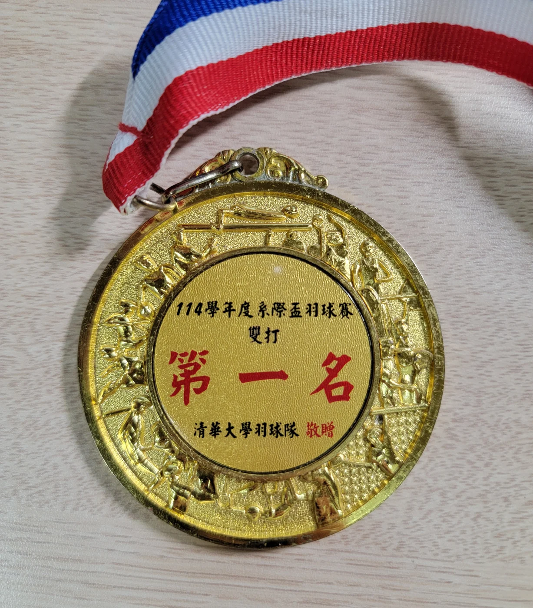
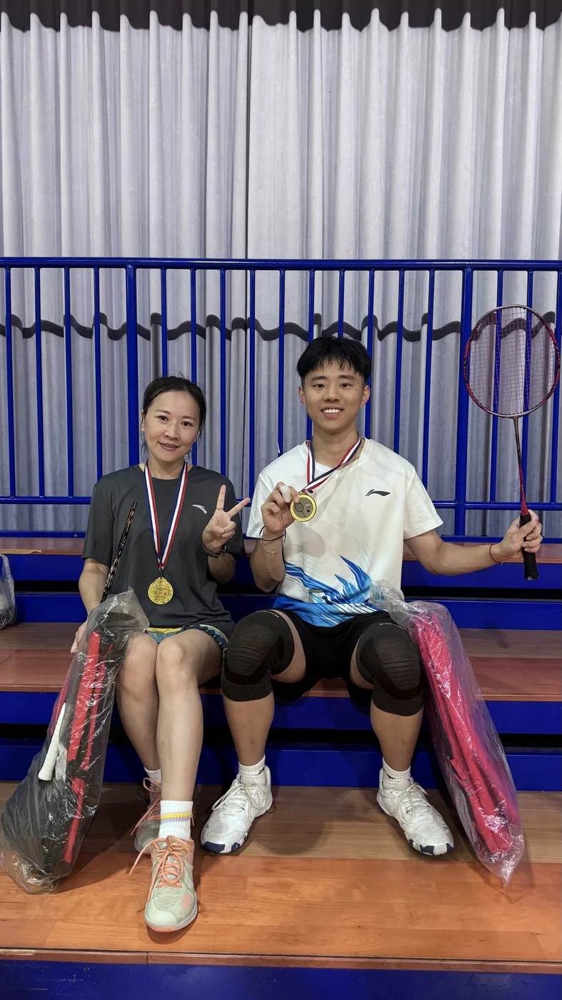

Awards & Honors · May 2025
First Place, NTHU Interdepartmental Cup Badminton Doubles
National Tsing Hua University · Interdepartmental badminton doubles competition
Medals1


Photos1


Awards & Honors · May 2025
National Tsing Hua University · Interdepartmental badminton doubles competition

